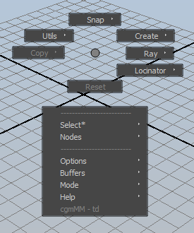
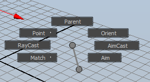
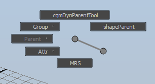
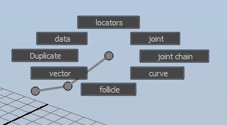
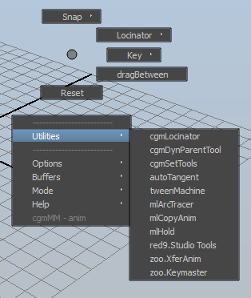

Marking Menu¶
Status: Alpha release - 09.12.2017
Overview¶

Until we get embeded video sorted. Please use this link: https://player.vimeo.com/video/205267391
This is our new all in one marking menu. It hosts a wide variety of contextual possibilities. Currently it is divided between two modes - anim and td. We used to have multiple marking menus for multiple things. It made more sense to have them housed in one marking menu and just compartmentalizing it to keep load speeds snappy.
It is designed to be a replacement for the s key when working and default Maya s key functionality is maintained.
Note
This tool is very much in flux still as we balance speed and interactivity
Issues¶
- There's been some crashing in 2017 we think we have resolved but it's been a thing.
General Concepts¶
Where the menu works - Any standard panel will let the marking menu bind to it - any 3d view, graph editor, outliner etc. If you try it over a tool settings window for example, it won't work.
RayCasting - Used to cast a ray from the mouse cursor through the geometry in the scene to return various information such as position and normal of the geometry that was hit.
- Cast - Each time the screen is clicked, a ray is cast and the specified post actions occur
- Drag - While the left click is held down, rays are continuously cast
Dropping - The default hotkey for dropping a tool is
q. For certain functions, final actions won't happen until the tool is dropped.Repeat - The default repeat function
gkey works fine with most processes.Quick press functions - Some menus have functions that happen when the hot key is pressed quickly and released under a certain time. Anim is an example of this.
Hidden Menus - We found that just not building menu options where possible is much faster than enabling/disabling options. So for example, in the td menu if you have more than one thing selected, you will have more options in the sections below.
Context - What context functions happen based on selection. For example if you have scene wide context and set joint axis to on. All joints in scene will have their joint axis turned on
*in menu item name - This means this menu item is contextual. It works off the context mode you have the marking menu in.
Shared¶
Currently there are several modes for the marking menu. The different modes share some options. Here's the base td menu as reference:
Compass¶
Snap¶
The functionality is also mirrored in the toolbox. The last object selected is the snapTo object unless used in rayCast mode in which all selected objects will be snapped.
Snap (N) - Snapping marking menu.
Point- Point matching a from/to selection formatParent- Point and orient matching a from/to selection formatOrient- Orient matching a from/to selection formatMatch- If an object is tagged to a cgmMatchTarget, will match the object to it's match target. If it is an updatable object (Locinator locator), it will updateAim- Currently uses object defaults from Menu. Will take into account object tagging in future. If three or more objects are selected, splits to subMenu:All To Last- All items aim at the lastSelection Order- Each object aims to the nextFirst to Midpoint- first object aims at the midpoint of the rest of the selection
RayCast- utilizes the rayCast options to detect a point in spaceAimCast- utilizes rayCasting to aim selected objects in real time at a point of intersection
Reset¶
Reset (S) - Reset the current object. Honors reset settings mode
Lower¶
These option lines are shared between modes. Remember you can edit them easily via the toolbox settings tab.

Obj Defaults¶
What information is to be assumed on selected objects should no object specific information be self stored.
Obj AimObj UpObj Out
Reset Mode¶
How the reset button should function. The core function uses one of Morgan Loomis' calls. If you have certain attributes selected in the channel box only those will be reset.
Default- resetTranform attrs- Only reset transform attributes and not others
Raycast Options¶
It is by far easier to change these options in the toolbox . These options affect both ray snapping and creation.
CastSurface- First hit per surfaceMidpoint- Mid point of nearest and furthest hits detectedFar- Furthest hitPierce- All intersectionsxPlane- Plane is generated to cast uponyPlane- ...zPlane- ...
OffsetNoneDistance- Object is offset by a given distance along the vector of the mesh hitSnapCast- Object is offset by a detected offset amount based on the objects 'down' axis first intersection. This is only until we find a better way to detect a better offset amount.
Set offset- brings up a ui prompt to change the offset value to use with offset distance mode.Orient- None
- Normal - Orient target with the assumed axis information relative to the normal of the mesh hit. The orient mode is still being refined.
Cast BufferDefineAdd selectedRemove selectedSelect membersClear
Aim Tolerance- Tolerance for aim
Reset¶
Clears option vars to 'reset' the marking menu
Report¶
Logs the data that is stored to the marking menu. Mainly for dev purposes but may be helpful for others.
TD¶
This is the TD marking menu. It's designed as a replacement to our old tdTools - both to add features as well as make things more intuitive and at a single button press. If it gets too unwieldy, it may be split to multiple modes.
Quick Press Functionality - Set key.
Snap(N) - SHARED.Create(NE)Ray(E)Locinator(SE)Reset(S)Copy(W) - Only shows up with more than one object selected.Utils(NW)
Utils¶
Group(NW)Just Group- Creates group for obj and names itGroup Me- Groups selected with zero group and parents to worldIn Place- Groups selected with zero group and maintains parent
Parent(W) - Only shows up with 3 or more items selectedOrderedReverse
shapeParent(NE) - Use our shapeParent in a from:to format
Create¶

Transform Here(N) - Creates a tranforms matching selected objects transformsCurve(S) - Create a curve with the selected objects or components defining the cvsControl:type(W) - Creates at the selected objects or point of a componentJoint Here(NW) - ...Locators(NE)-Selected(N)- creates an updatable locator based off of selection. Supports most components.Mid Point(NE)- updatable midpoint loc of selected targetsRayCast(SE)- Just another place to access thisWorld Center(S) - self explanatoryClosest Target(W)- Creates updatable loc the updates to the closest target to the first object in selectionClosest Point(NW)- Creates updatable loc the updates to the closest point on the surface of targets to the first object in selection
Copy¶
Copying/matching stuff from one object to others. Only active with two or more objects.

Transform(N) - Match the transformShapes(SW) - Snaps a duplicate of selected objects to last and then shapeParents those in place to the last objectOrienation(NW) - Match the orienation of transforms. Not working properly with joints yetPivot(W)rp- Copy the rotate pivotsp
Ray¶
Object creation/duplication with shooting rays at geo shapes. See the root marking menu doc for breakdown of options and concepts. See cgmMarkingMenu for shared options.
- Cast/Drag - Cast is create per click, drag is create at interval while button is pressed
- locators (N) - Locator is created an updated until left button is released at which point that locator will stay put.
- joint (NE) - Joint.....
- jointChain (E) - Drop function. The joint chain will be created from the clicked locators
- curve (SE) - Drop function. The curve will be created connecting the clicked locators.
- follicle (S) - Drop function. Follicles created at clicked locators
- vector (SW) - Two linear curves are created where possible. One from the cast point to each hit. The second curve is along the hit geo's normal. This is mainly a useful visualization tool but users may well find other uses for it.
- duplicate (W) - Each click, any selected objects will be duplicated and 'cast' following all options.
- data (NW) - Hit data is only logged on release of the left button.
- Reset (S) - SHARED. See cgmMarkingMenu
Lower Section¶
This section is still in play. We moved most of the items to the toolbox which is proving more useful.
Utilities¶
Select - Contextually pickable method to select given objects based on selection
- See context in options for more of a breakdown. Easiest to play with to see how it works
Distance - Requires at least two selected objects to build. First object selected is source. Curves, mesh and surfaces are suported. If target objects have multiple shapes, all shapes are checked.
Near
- Object
- Shape
- Surface Point - Closest point on selected objects
- Surface Loc - Closest point loc'd
- Surface Nodes - Wired nodes per shape and result loc
Far
- Object
- Shape
Joints
- Axis(contextual) - show, hide
- cometJO - Michael Comet's fantastic joint orient tool
SDK
- seShapeTaper - Out buddy Scott Englerts shape taper which we find indespensible when doing sdk joint facial setups.
Shapes
ShapeParent - Maya's shapeParent in place doesn't work. This one does (for the most part)
Combine - Combine selected shapes to the last. Deletes the old transforms.
Add - Add shapes to the last...same as combine???
Extract - Creates a copy of a specific given shape
Replace - Delete existing shapes on a transform and replace it with the other selected ones.
Color - Colors are called by names we gave them to make it useful than integers.
- Index - Color by display override method using maya color indices
- RBG - In Maya 2016, RGB override method was introduced. This uses that method
Curve
- Describe - Generates python commands for given curve shapes replication
- Mirror - WIP
Mesh
- cgmMeshtools
- abSymMesh - Great tool for working with blendshapes
Skin
- abWeightLifter
cgmLegacy - tools that need to be updated
- Locinator
- attrTools
- tdTools
Options¶
Context - What context functions happen based on selection
- selection
- below
- hierarchy
- scene
Anim¶

Until we get embeded video sorted. Please use this link: https://player.vimeo.com/video/205490221
This is the simple anim marking menu. It's designed to be quick loading and provide only the tools and functions that are most helpful when animating.
Quick Press Function Rapidly using the hot key will function as maya's traditional set key as well as honoring the options as specified by the user. By default, it works exactly like Mayas.
Compass¶

Snap(N) - SHARED.Locinator(NE) - Locinator marking menu.Key(E)Delete Key(N)Regular(E) - Manual set key instead of quick dropBreakdown(SE)
dragBetween(SE) - Uses Morgan Loomis great script for interactive tweeningReset(S) - Reset selection based on settings. Channel box selection honored when in that mode
Utilities¶
Series of tools we're allowed to include
cgmLocinator- Go to page...cgmDynParentTool- Go to page...cgmSetTools- Go to page...autoTangent- Michael ComettweenMachine- Justin Barrettml_arcTracer- Morgan Loomisml_copyAnim- Morgan Loomisml_hold- Morgan Loomisred9.StudioTools- red9zoo.XferAnim- zooTools anim transfer toolzoo.Keymaster- zooTools key tools
Lower Section¶
Buffers¶
Match - Go to page... Cast - Go to page...
Key Type¶
Regular - Normal key Breakdown key - for anyone who uses them
Key Mode¶
Default - Keys all keyable. Maya's default keyer Channel box - first attempts to find selected attrs in the channel box for keying before keying all on selected objects
Puppet¶
Works with our modular rigger. Update soon.